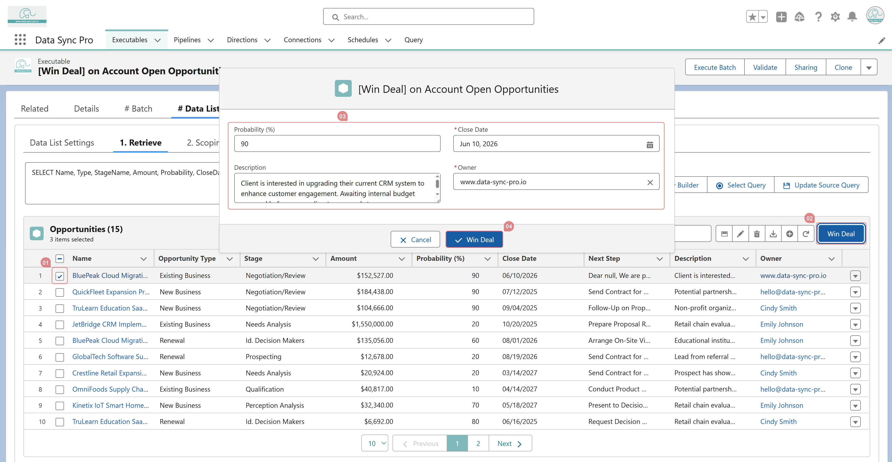

Yes. In the Action on Target section of the Executable, use the Edit Target Fields Before Action field to enter the target field API names (comma-separated).
This displays the specified fields with their transformed values in an editable form, allowing users to review and adjust them before confirming the action.
